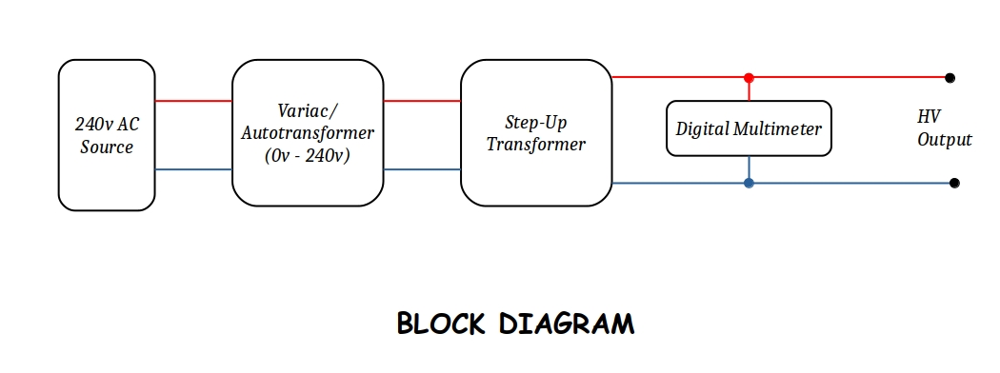

How to blow up a multimeter (Short Story)
Almost a year and a half ago, I was performing an experiment. The goal was to use a transformer and a variac to achieve a visible electric arc. I also used a digital multimeter to measure the voltage (with a maximum AC voltage rating of 750v).
So, the plan was to connect the output of the variac to the secondary coil of the step-down transformer (which made it function as a step-up transformer); its primary coil terminals was the output of the system and was hooked-up to the multimeter.
The setup looked like this :

According to the plan, I used the variac to increase the voltage from 0v to 240v which was further multiplied 20 times using the transformer and whose output was measured using the multimeter. Since the max. AC voltage rating was 750v, I thought it could very easily tolerate upto 650v after which I would have disconnected the multimeter from the whole system. And continue raising the voltage.
I was nervous and excited at the same time. I flicked the switch and started the experiment. Everything was normal as planned, no smokes, no fire. The reading in the multimeter was almost 0v. Then I started rotating the knob of the variac really slowly. The voltage reading increased and a very faint humming sound was audible from the transformer (no surprises there too). I cotinued this until I reached 400v; at this point I started checking for any excess heat or leaking arcs in the transformer. Fortunately, everything was nice and cool. The multimeter was doing fine too. But the humming sound from the transformer increased drastically and was making me sweat.
Just for the sake of fun, I connected some resistors and electrolytic capacitors to the output; they blew up like firecrackers (that part was really fun).
I started rotating the knob again, the voltage reading almost reached 500v but still no arcs were visible, even after turning off room lights. Everything was fine until the voltage reached 580v; I heard sparks from inside the multimeter, I could also smell smoke coming out of the thing. It scared the hell out of me. I flicked the mains switch and the sparks went off. But it was too late. I knew my cute little multimeter had died. But I still opened up the multimeter to see if there is any hope and it turned out that there was’nt any.
Ergo, the experiment ended in catastrophic failure. The consequence was me crying in front of my parents to buy me a new multimeter.
Conclusion : Never beleive power ratings of a cheap chinese mulltimeter.
I hope you like this failure of my mine. Feel free to give me feedback via email.
(my email : anmolcoder16@protonmail.com)